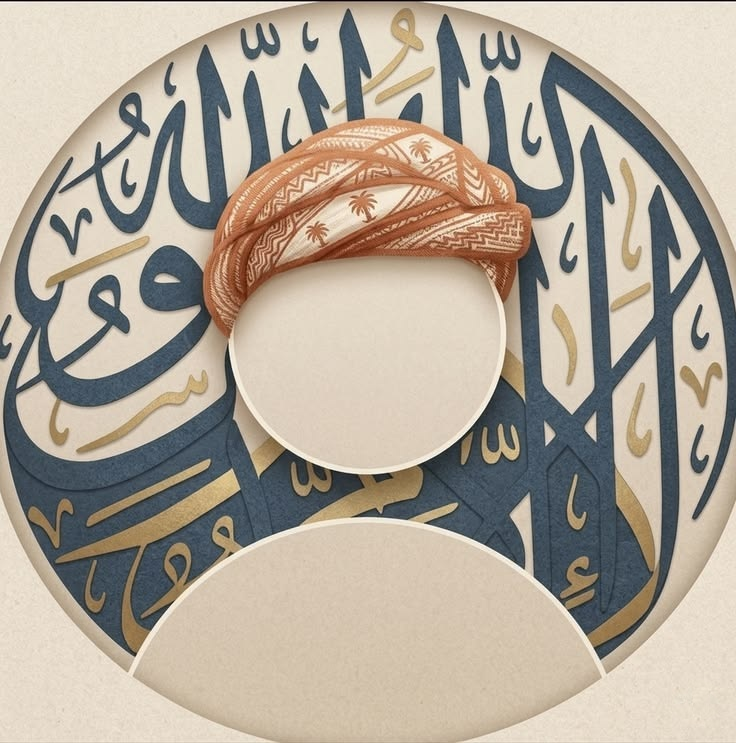

Hi! I'm Abid — a Higher Secondary student in the Humanities group, building a steady foundation in learning, discipline, and reflection. "Alhamdulillah for everything."

I'm Shofiqul, currently pursuing my Higher Secondary Certificate at Jhaudia College in Kushtia, Bangladesh. My focus is the Humanities — language, society, and ideas — and I try to bring the same discipline to my studies that I bring to everything else.
I believe in steady, consistent effort over shortcuts, and in staying grounded while I grow — academically and personally.
grateful for every lesson learnedKushtia, Bangladesh. Currently studying, building skills in analysis, writing, and critical thinking.
Kushtia, Bangladesh. Completed foundational secondary education.